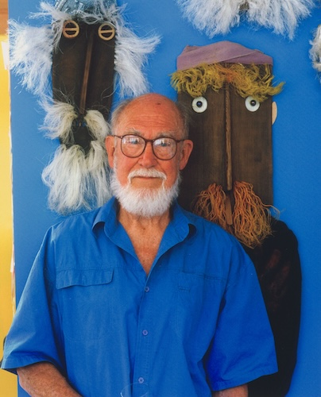

Gordon Andrews (1914–2001) was an influential Australian designer
whose work spanned
multiple disciplines, including industrial design, graphic design, and exhibition design. Born
in Sydney, Andrews initially trained as an artist before transitioning into design, where he
became a pivotal figure in shaping modern Australian visual culture. His career began in the
1930s, and by the post-war period, he had established himself as a leading designer,
working on projects both domestically and internationally.
Andrews was deeply interested in modernist principles, and his work often reflected a fusion
of functionality and aesthetic innovation. He was particularly influenced by European and
Scandinavian design movements, which he encountered during his travels. These
experiences broadened his perspective and contributed to his reputation as a
forward-thinking designer in Australia.